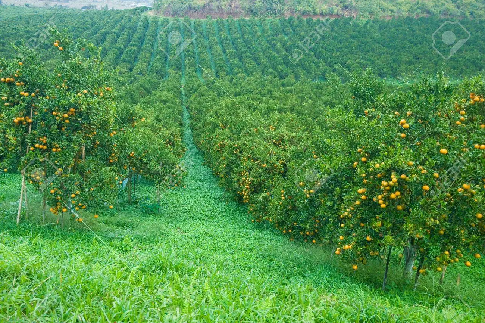

En Jujuy y Salta, destinamos más de 3.000 hectáreas a las plantaciones de naranjas, pomelos y limones; fruta fresca que cultivamos, procesamos y comercializamos. Somos el mayor exportador nacional de cítricos. Desde 1990, poseemos en Libertador General San Martín una fábrica de jugos concentrados, con capacidad para producir 7.000 toneladas de jugo.

Producimos con la mejor calidad, preservamos los ecosistemas que nos rodean y cuidamos el bienestar de las comunidades donde estamos presentes. En 2017, creamos una empresa de energía renovable, orientada a desarrollar proyectos para futuros parques solares en distintos puntos de la Argentina.